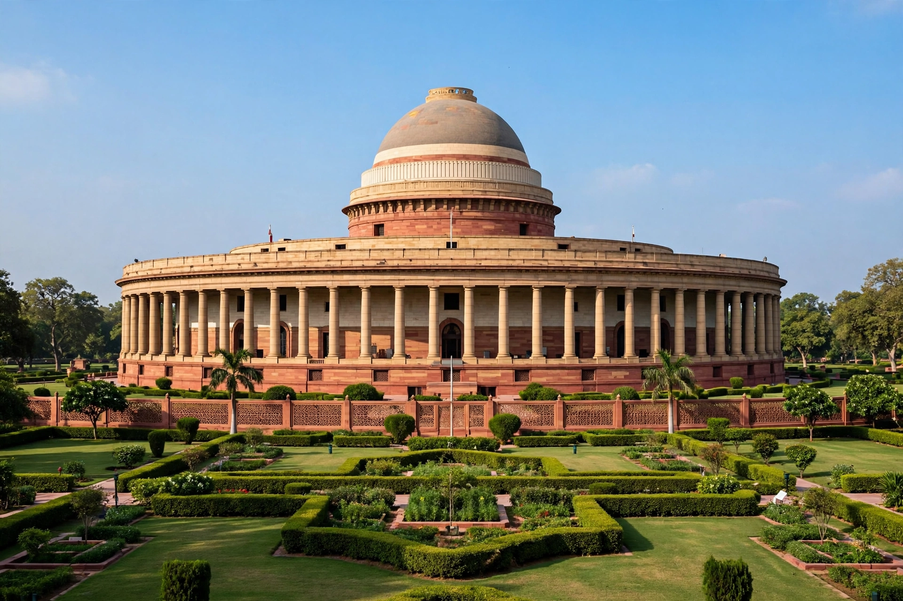

Parliament House (Hindi: Sansad Bhavan) in New Delhi is the former seat of the Parliament of India. The circular, colonnaded building was designed by Edwin Lutyens and Herbert Baker, built between 1921 and 1927, and is located on Sansad Marg near India Gate.

The circular design was partly inspired by the Chausath Yogini temple at Morena. It housed the Council of State, Central Legislative Assembly and Chamber of Princes, and after independence the Lok Sabha and Rajya Sabha, the Central Hall hosting joint sittings and the Constituent Assembly (1946–49).
A new triangular Parliament building, part of the Central Vista redevelopment, was inaugurated on 28 May 2023 by Prime Minister Narendra Modi; the old building is to be retained as a heritage structure / museum of democracy.
See also: Parliament of India